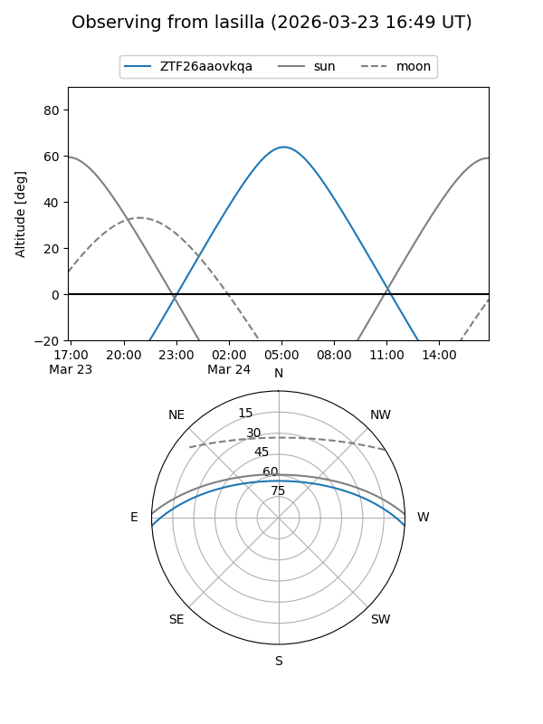
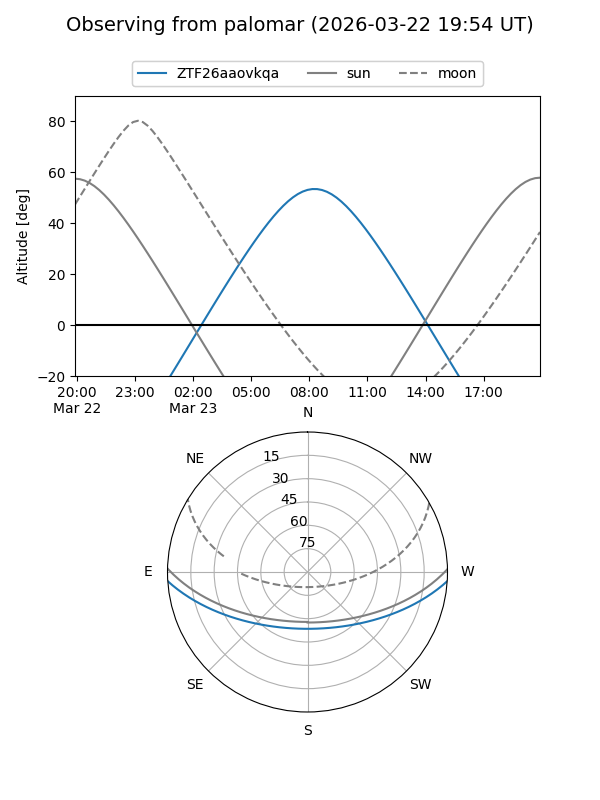

ZTF26aaovkqa
Target ZTF26aaovkqa at 2026-03-23 09:25
Aliases and brokers:
FINK: link
Lasair: link
ALeRCE: link
alt names
ZTF26aaovkqa (ztf,fink_ztf)
Coordinates:
equatorial (ra, dec) = 187.6915,-3.01833
equatorial (HMS+DMS) = 12:30:45.95,-03:01:05.99
galactic (l, b) = (292.7406,+59.44375)
Flags:
Photometry:
last ztfg=17.56
1 ztfg detections
Lightcurve
Visibility


Additional plots